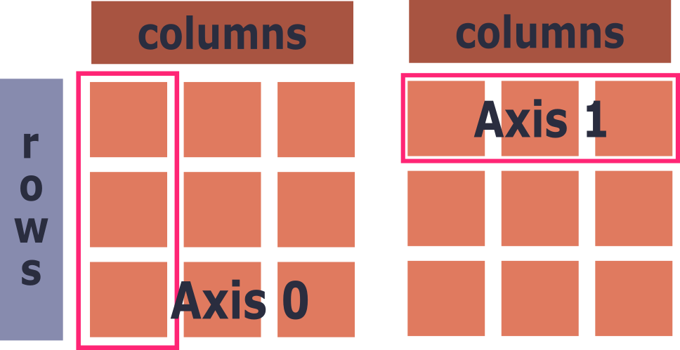

Learning Objectives
Introduction
Now that we are familiar with NumPy, we will look further into its strength (mathematical operations) and common tools, methods, and functions you can use within the NumPy ecosystem.
Vectorised operations
In the very first part of the previous section we demonstrated the use case for NumPy over lists; that NumPy arrays are much quicker for applying mathematical operations than a for loop implementation with lists. The reason for this is vectorisation, which is made possible due to the fact NumPy arrays are homogeneous (a single dtype). This allows the Python code to delegate the operations to a more optimised set of C code.
This works with any of the standard mathematical operators, like multiplication, which was demonstrated previously and below:
addition
subtraction
to the power of
This process, which is called broadcasting, can be used to quickly update whole tracts of data in one line of code.
To help keep this grounded in real world use cases we will head back to our fluorescent plate example. In this scenario we know the background level of fluorescence from a blank well is 40.0, we therefore want to subtract this from all samples to scale the values to 0. What would be an arduous process in a spreadsheet can be done simply here:
If you don't like seeing the numbers in the scientific notation, which is hard to read in this case, they can be suppressed using the global function set_printoptions(), with suppress=True as the argument.
It is now much more visually clear which wells are essentially background noise!
7.
Using the scaled plate array, complete the following:
- Create a boolean mask identifying all values that are 20 or less.
- Use the mask to replace those values with either 0 or NaN.
Broadcasting more than one value
Previously, we have been modifying an array with a singular value. However, it can be altered to use an array of data rather than just one. For mathematicians this can facilitate matrix to matrix multiplication, although for bio-scientists that is less relevant. Instead one use case is to update each row in the matrix given one value or statistic from that row.
Using the plate example, we know that the last element in each row is the positive control, which should contain the highest values for the experiment. This information can be used to scale all the values to be a fraction of the positive control in that row. First we must extract the control column and then divide each row by the array:
Under the hood, when we are - for example - multiplying an array by a singular value the singular value is treated as an array that matches the shape of the one being operated on, filled entirely with that value.
One problem, we get a ValueError where the shapes (8,12) and (8,) can not be broadcasted together. This is a common error in NumPy where the two arrays don't align in their last (trailing) dimension. Here the trailing dimensions are 12 and 8, which do not match. The underlying issue is that our control array has a dimension of one compared to the two for the plate array.
We can see this through the attribute ndim (number of dimensions):
To ensure the control array has the same dimension we need to retain a : after the selection, as so:
Keeping in the : retains the dimension, rather than collapsing, which is what a solo integer indexing does. If you were to choose a set of values in the middle, you would need to have an end exclusive value for the slice, as so:
Later in this section we will look at multiple methods to reshape an array as it is a common error to see.
With that sorted we can now normalise the plate readings. You can see below that the final item in each row has been changed to 1 with the other values a fraction of it.
8.
Using the normalise_plate array created above, complete the following:
1: Identify which wells (values) have a normalised value greater than 0.8.
- Create a boolean mask by applying the comparison to the array.
- Use the mask to retrieve the values that satisfy the condition.
NumPy Summary Functions
NumPy also comes with all the mathematical functions you can think of, a comprehensive list of them can be found on their website. We will focus on a select few that are used time and time again. However always keep in mind that NumPy will likely have the mathematical function you need.
Just as we could broadcast a mathematical operation to the whole (or rows) of a matrix, it is also possible to use NumPy functions to find statistical properties of the matrix. The functions will normally give a result for a set of data from either the column or row, or in their terms the axis.
Axis: The axis is the length along which to apply the function, either by the columns (axis 0) or the rows (axis 1)

One of the most common functions is np.sum(), which will sum the values along an axis. By default np.sum() will find the sum of all elements in the array
To have it sum along a specific axis you provide the argument axis.
Run the cell below to return the sum of the columns, then alter the argument to be 1 to see the result for the rows.
Other common summary functions are: np.mean(), np.std(), np.min(), np.max() which, like sum, do what they say:
The results of these operations can be stored as a new variable to generate downstream analysis. For example, the standard deviation can be divided by the square root of the number of values to find the standard error around the mean, or:
$$SEM = \frac{\sigma}{\sqrt{n}}$$
This can be simplified to a single line of code:
9.
Using the cleaned data from the previous section complete the following:
- Calculate the mean fluorescence across the entire plate
- Find the minimum and maximum values across the entire plate
- Calculate the mean for each row (i.e. each experimental repeat)
- Calculate the mean for each column (i.e. each specimen)
- Calculate the standard deviation across the entire plate, then use it to calculate the SEM:
- Mask out any wells below 120 AFU as unreliable, then calculate the mean of the remaining wells
NumPy Generation Functions
NumPy also contains a few functions for generating arrays pre-filled with a set value. These are often used to create dummy data, counts of measurements, or time series data.
Range functions
You can create an array with a range of values with np.arange(), which is analogous to the built-in Python function range(). As with range, arange will create an array which is the length of the value you give to it:
Likewise, this can be refined by giving two arguments, where the first states the starting value, the second the end exclusive value:
Adding a third argument tells the function what step to use:
np.arange is useful when you need to generate a time series or index to accompany experimental recordings. However, when you know the start time, end time, and number of recordings (rather than the step size) np.linspace is often a better fit. It generates a specified number of evenly spaced values between two endpoints.
A more complex example of np.linspace's use case would be calculating the number of samples given the sampling rate (Hz) and the duration, which is a classic in EEG recordings, behavioural experiments, or anything measured over time:
The time variable can then be used to populate the X-axis of a time series plot.
Combining Arrays
Two or more arrays can be joined together to extend the length of both a 1-D array and a 2-D matrix. This is most commonly used when you have more than one source for your data, yet they are from the same experiment or experimental repeats. You would therefore want them in the same data structure.
To join an array onto the end of another, we use the concatenate function (np.concatenate):
This can be adapted to matrices by providing an axis. When the axis is 1 the second is appended to the end of its corresponding array:
When axis is 0, the operation is columnar, so the second array is stacked underneath.
Equations in NumPy
When calculating the SEM we dabbled in creating an equation in NumPy, however lets go over it with a fresh example to emphasise its syntax. As with the previous examples, a NumPy equation will be applied to the array as a whole.
For example, lets take the Beer-Lambert law for measuring the concentration of cells or proteins in a solution. This is calculated via the understanding that the amount of light absorbed is proportional to the concentration of a solution in a substance:
$$c = \frac{A}{\varepsilon \cdot l}$$
where:
- A is absorbance (what you measure)
- ε is the molar extinction coefficient (a constant for a given molecule)
- c is concentration
- l is path length (usually 1 cm in a standard cuvette)
First we define the constants:
And then we simply write out the formula in NumPy following the standard BODMAS rules for the sequence of operations:
Re-shaping arrays
A common reason for a third-party function to fail or a common source of headaches for new users is the user's array being a different shape to what is expected down stream in the workflow. This occurs often when the expected array has each element in its own nested array, making it a single column matrix. This particular problem is often found in machine learning packages, such as SciKit-Learn, which we will use exclusively in the machine learning module.
We will explore this visually below:
Above, we have a standard 1-Dimensional array. However, the function normally expects multiple columns not just one. It therefore needs to be reshaped to look like a matrix with one column. For this we can use the .reshape() method:
As can be seen the array now runs down the vertical axis rather than across.
An alternative way of achieving this is using the np.newaxis function, which will insert a new, singular, dimension where ever you put it inside some indexing brackets:
What do you think will happen if np.newaxis is placed in the first indexing position?
10.
Using the array provided below:
1: Add a new column of random data.
- Create a 1-D NumPy array of random values, one per row of the existing array.
- Reshape it into a column so it can be concatenated onto the array.
- Concatenate it along the correct axis to produce a 5-column array.
- Update every value in the 2nd column using:
where $alpha = 4$.
Summary & Quiz
In this section and the last we have gone over the basics of NumPy for bioscience research. Whilst the content here is not exhaustive, we have covered many of the tools and concepts you will encounter when using Python for data science.
Summary & Quiz
Attempt the questions below once you have finished. If you get any wrong, head back to that section to remind yourself of the reasoning/syntax behind the correct answer:
What is the term for applying a single value across an entire array in one operation?
For a 2-D matrix, which axis does `np.sum(arr, axis=0)` operate along?
Why does dividing a `(8, 12)` array by an `(8,)` array raise a ValueError?
Which function generates a set number of evenly spaced values between two endpoints?
What does `before_array.reshape(-1, 1)` do to a 1-D array?